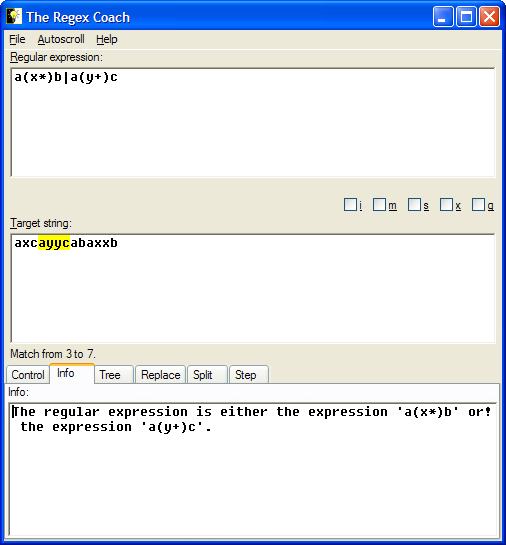

Select the "Info" tab.

The info pane shows an English description of the regular expression, or rather of its top level.
Note that the exclamation mark is not part of the sentence but the 'continuation' character of the pane, i.e. it is there to show you that the sentence is continued on the next line. (As if you hadn't noticed yourself...)